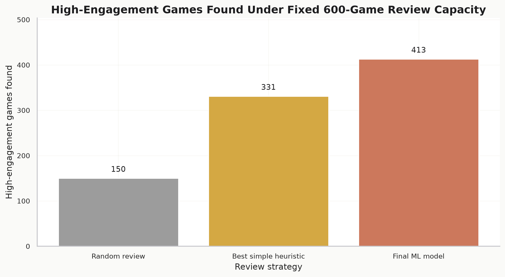
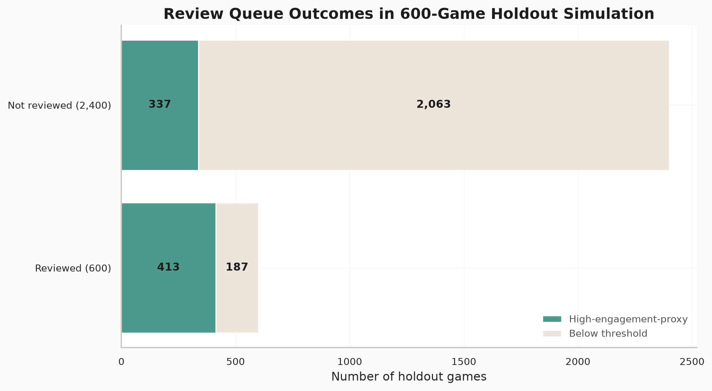
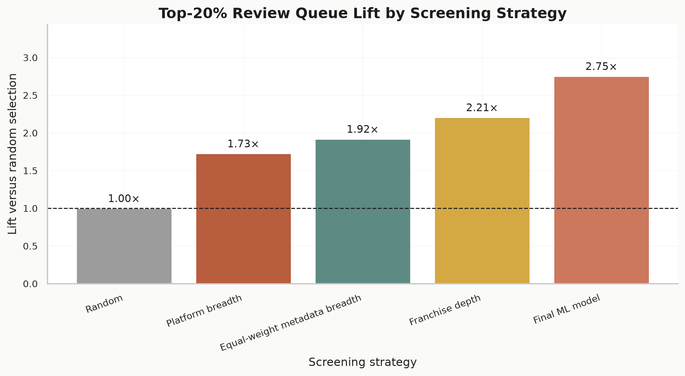
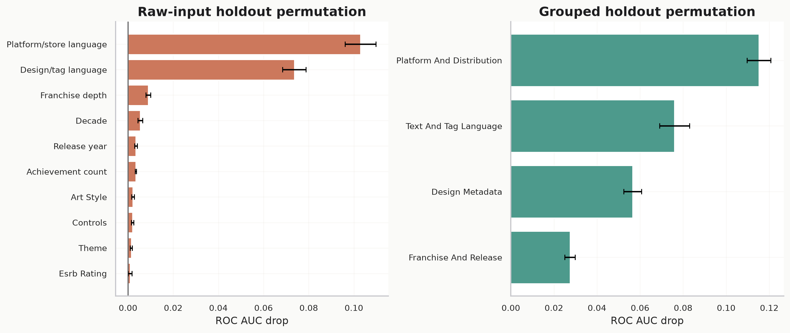
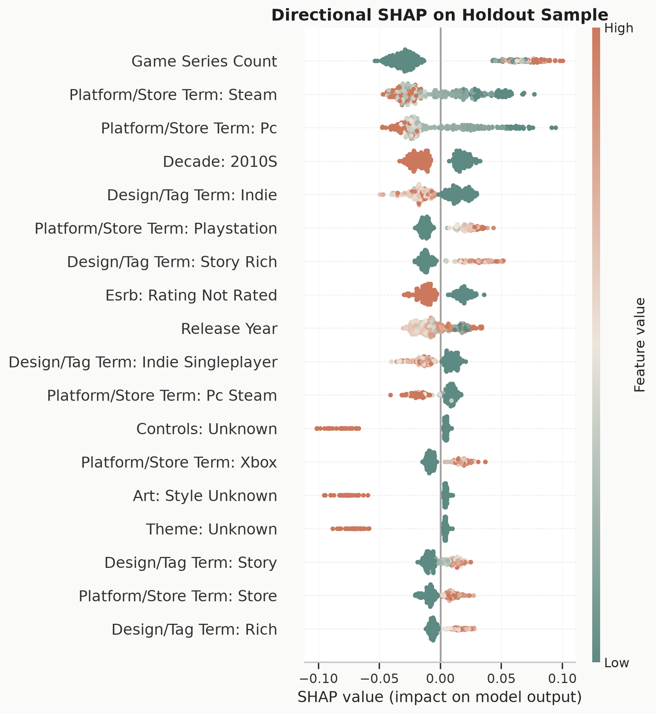

Audit
审计
01- Load 15,000 games and 43 fields.
- Check schema, duplicates, placeholders and row retention.
- Document the opaque engagement target boundary.
- 载入 15,000 款游戏和 43 个字段。
- 检查 schema、重复项、占位符和行保留。
- 说明 engagement target 的不透明边界。
Product analytics · human-in-the-loop screening
产品分析 · 人机协同筛选
This project ranks comparable games for scarce analyst review time. It uses observable metadata to identify high-engagement candidates, then keeps final product judgement with humans.
本项目为有限的竞品研究时间生成审核优先级。它使用可观察元数据识别高参与度候选游戏，但最终产品判断仍由人完成。
The analysis is deliberately framed as review prioritisation. It does not claim to predict commercial success or prove that features cause engagement.
本分析明确定位为审核优先级工具。它不声称预测商业成功，也不证明某些特征会导致参与度提升。
The project moves from data trust to decision value. Each stage leaves auditable tables or figures in the repository.
项目从数据可信度推进到决策价值。每个阶段都在仓库中留下可审计的表格或图表。
The charts show why the project is useful as a prioritisation system: it captures more high-engagement games in the same analyst queue.
这些图表展示项目为何适合做优先级系统：在同样的人工审核容量下，它能捕捉更多高参与度游戏。





Business recommendation
业务建议
The model is valuable because it focuses human review. It should shortlist games for deeper research, challenge assumptions about platform and design signals, and expose cases where analyst judgement is still required.
模型的价值在于聚焦人工研究。它应该用于生成深入分析的候选清单、挑战对平台和设计信号的直觉判断，并指出仍需人工判断的案例。
Comparable-game review prioritisation, evidence prompts, and capacity planning.
竞品研究优先级、证据提示和审核容量规划。
Revenue forecasting, causal claims, automatic portfolio decisions or replacing playtesting.
收入预测、因果结论、自动产品组合决策或替代 playtesting。
The supplied engagement score is opaque, so the analysis treats it as a screening proxy.
数据中的 engagement score 公式不透明，因此分析只将其作为筛选代理指标。